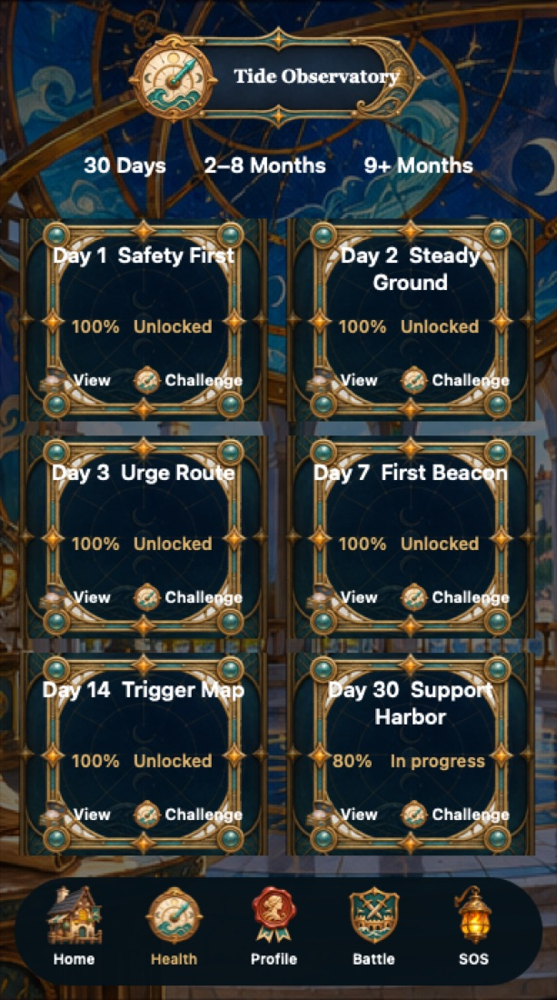

Alcohol recovery
SoberBoss
Give each sober day a place on the map. Track your streak, explore the Tide Observatory, and reach out to people working toward sobriety.


Inside SoberBoss
Set a starting point
Record your recovery date and what you used to spend on alcohol.
Explore the Tide Observatory
Follow milestones and choose small challenges in the City of Tides.
Connect under an alias
Join community conversations, ask for one-to-one support, or play a friendly battle.